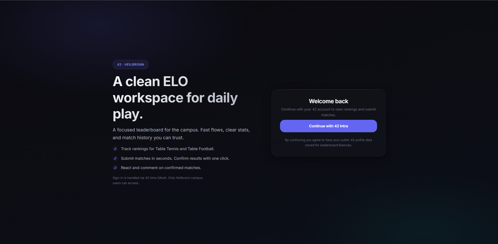

42 ELO Leaderboard
Competitive Rankings System
A ranking platform for 42 students implementing the ELO rating algorithm. Features real-time leaderboards, match history, and statistical analysis of player performance over time.
- Stack
- TypeScript, React, PostgreSQL
- Role
- Full implementation
- Demo
- Live demo
- Link
- View source
